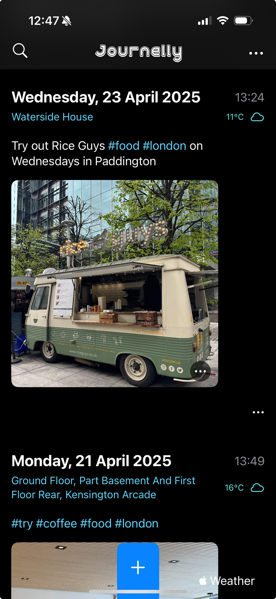
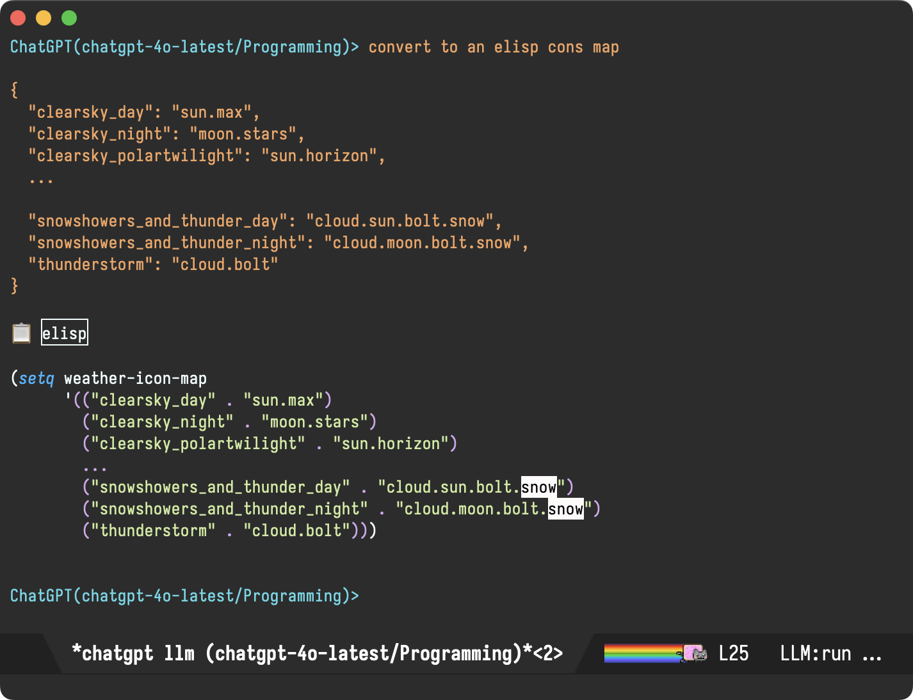
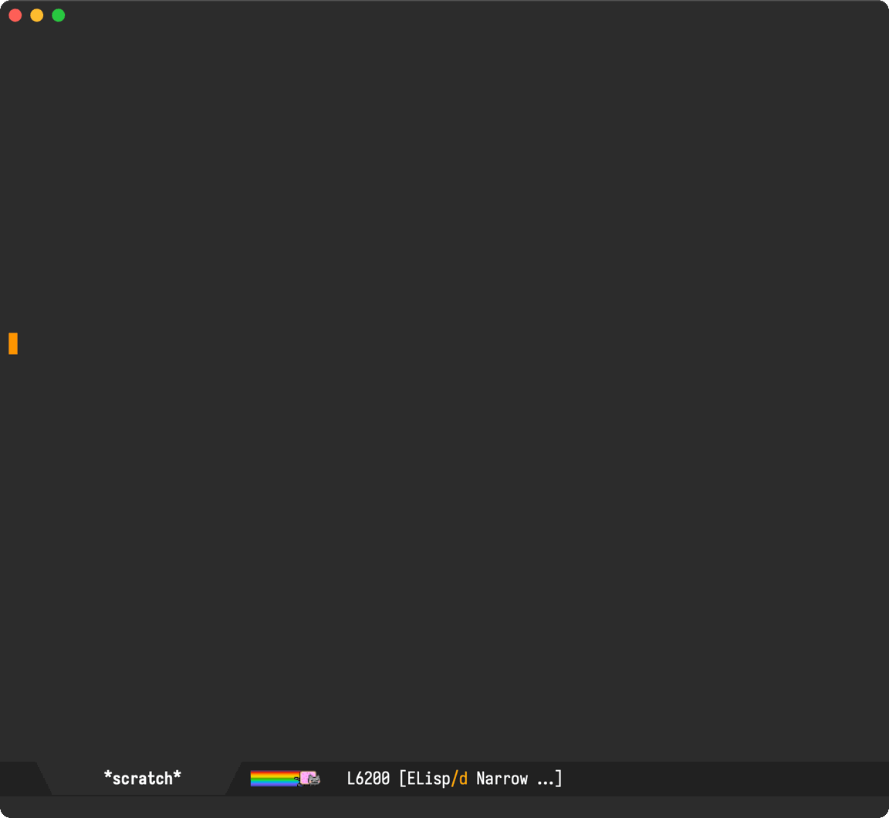
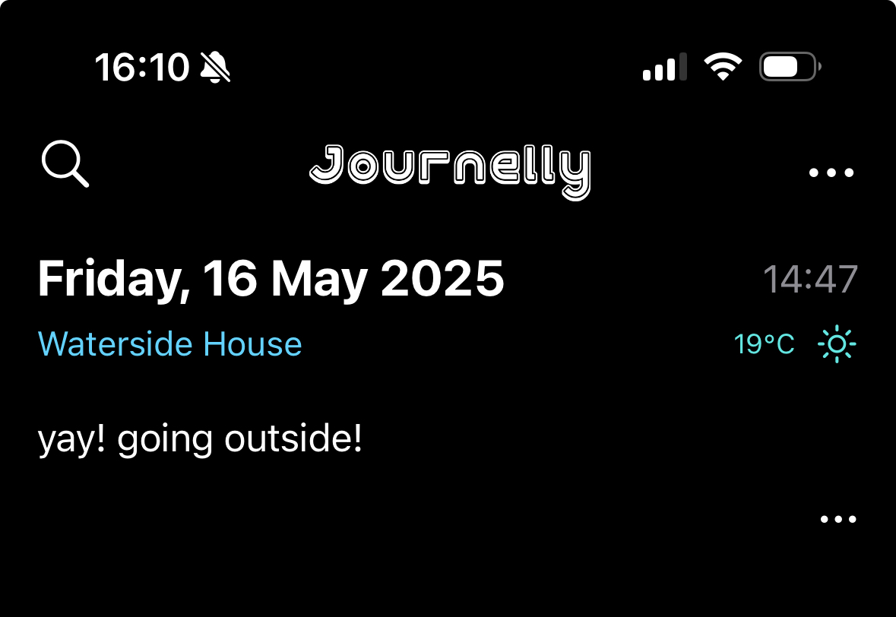

Álvaro Ramírez
A richer Journelly org capture template
In addition to including user content, Journelly entries typically bundle a few extra details like timestamp, location, and weather information, which look a little something like this:

Behind the scenes, Journelly entries follow a fairly simple org structure:
* [2025-04-23 Wed 13:24] @ Waterside House :PROPERTIES: :LATITUDE: 51.518714352892665 :LONGITUDE: -0.17575820941499262 :WEATHER_TEMPERATURE: 11.4°C :WEATHER_CONDITION: Mostly Cloudy :WEATHER_SYMBOL: cloud :END: Try out Rice Guys #food #london on Wednesdays in Paddington [[file:Journelly.org.assets/images/C5890C25-5575-4F52-80D9-CE0087E9986C.jpg]]
While out and capturing entries from my iPhone, I rely on Journelly to leverages iOS location and weather APIs to include relevant information. On the other hand, when capturing from my Macbook, I rely on a basic Emacs org capture template (very similar to Jack Baty's):
(setq org-capture-templates '(("j" "Journelly" entry (file "path/to/Journelly.org") "* %U @ Home\n%?" :prepend t)))
These templates yield straightforward entries like:
* [2025-05-16 Fri 12:42] @ Home A simple entry from my Macbook.
I've been using this capture template for some time. It does a fine job, though you'd notice location and weather info aren't captured. No biggie, since the location of my laptop isn't typically relevant, but hey today seemed like a perfect day to get nerd snipped by @natharari.
And so, off I went, to look for a utility to capture location from the command line. I found CoreLocationCLI, which leverages the equivalent macOS location APIs. As a bonus, the project seemed active (modified only a few days ago).
Installing CoreLocationCLI via Homebrew was a breeze:
brew install corelocationcli
The first time you run corelocationcli, you'll get an message like:
"CoreLocationCLI" can't be opened because it is from an unidentified developer...
You'll need to follow CoreLocationCLI's instructions:
To approve the process and allow CoreLocationCLI to run, go to System Settings ➡️ Privacy & Security ➡️ General, and look in the bottom right corner for a button to click.
After approving the process, I ran into a snag:
$ CoreLocationCLI CoreLocationCLI: ❌ The operation couldn’t be completed. (kCLErrorDomain error 0.)
Lucky for me, the README had the solution:
Note for Mac users: make sure Wi-Fi is turned on. Otherwise you will see kCLErrorDomain error 0.
Oddly, my WiFi was turned on, so I went ahead and toggled it. Success:
$ CoreLocationCLI 51.51871 -0.17575
We can start by wrapping this command-line utility to return coordinates along with reverse geolocation (ie. description):
(defun journelly-get-location () "Get current location. Return in the form: `((lat . 51.51871) (lon . -0.17575) (description . \"Sunny House\")) Signals an error if the location cannot be retrieved." (unless (executable-find "CoreLocationCLI") (error "Needs CoreLocationCLI (try brew install corelocationcli)")) (with-temp-buffer (if-let ((exit-code (call-process "CoreLocationCLI" nil t nil "--format" "%latitude\t%longitude\t%thoroughfare")) (success (eq exit-code 0)) (parts (split-string (buffer-string) "\t"))) `((lat . ,(string-to-number (nth 0 parts))) (lon . ,(string-to-number (nth 1 parts))) (description . ,(string-trim (nth 2 parts)))) (error "No location available"))))
A quick check shows it's working as expected.
(journelly-get-location)
'((lat . 51.51871)
(lon . -0.17575)
(description . "Waterside House"))
Now that we're able to get the current location, we need a way to fetch weather info. I discarded using WeatherKit on macOS for its dependence on a developer account and obtaining an API key. No worries, I found the great MET Norway API which is freely available without the need for keys.
(defun journelly-fetch-weather (lat lon) "Fetch weather data from MET Norway API for LAT and LON. Return the parsed JSON object." (let* ((url (format "https://api.met.no/weatherapi/locationforecast/2.0/compact?lat=%s&lon=%s" lat lon)) (args (list "-s" url))) (with-temp-buffer (apply #'call-process "curl" nil t nil args) (goto-char (point-min)) (json-parse-buffer :object-type 'alist))))
We can take it for a spin with:
(journelly-fetch-weather 51.51871 -0.17575)
We get a nice object with a chunky time series (cropped for readability):
((type . "Feature") (geometry (type . "Point") (coordinates . [-0.1758 51.5187 30])) (properties (meta (updated_at . "2025-05-16T11:17:44Z") (units (air_pressure_at_sea_level . "hPa") (air_temperature . "celsius") (cloud_area_fraction . "%") (precipitation_amount . "mm") (relative_humidity . "%") (wind_from_direction . "degrees") (wind_speed . "m/s"))) (timeseries . [((time . "2025-05-16T12:00:00Z") (data (instant (details (air_pressure_at_sea_level . 1025.6) (air_temperature . 18.0) (cloud_area_fraction . 4.7) (relative_humidity . 44.2) (wind_from_direction . 17.6) (wind_speed . 3.6))) (next_12_hours (summary (symbol_code . "fair_day")) (details)) (next_1_hours (summary (symbol_code . "clearsky_day")) (details (precipitation_amount . 0.0))) (next_6_hours (summary (symbol_code . "clearsky_day")) (details (precipitation_amount . 0.0))))) ... ((time . "2025-05-26T00:00:00Z") (data (instant (details (air_pressure_at_sea_level . 1007.3) (air_temperature . 12.6) (cloud_area_fraction . 28.1) (relative_humidity . 91.3) (wind_from_direction . 258.7) (wind_speed . 3.5)))))])))
Journelly entries need only a tiny subset of the returned object, so let's add a helper to extract and format as preferred.
(defun journelly-fetch-weather-summary (lat lon) "Fetch weather data from MET Norway API for LAT and LON. Return in the form: '((temperature . \"16.9°C\") (symbol . \"cloudy\"))." (let* ((data (journelly-fetch-weather lat lon)) (now (current-time)) (entry (seq-find (lambda (entry) (let-alist entry (time-less-p now (date-to-time .time)))) (let-alist data .properties.timeseries))) (unit (let-alist data .properties.meta.units.air_temperature))) (unless entry (error "Couldn't fetch weather data")) (let-alist entry `((temperature . ,(format "%.1f%s" .data.instant.details.air_temperature (cond ((string= unit "celsius") "°C") ((string= unit "fahrenheit") "°F") (t (concat " " unit))))) (symbol . ,(alist-get 'symbol_code .data.next_1_hours.summary))))))
We can take it for a spin with:
(journelly-fetch-weather-summary 51.51871 -0.17575)
Nice! Look at that weather, it's a sign I should finish writing and go outside!
'((temperature . "19.0°C") (symbol . "clearsky_day"))
I really should go outside, but I'm just so close now… Or so I thought! That symbol (ie. "clearsky_day") isn't recognizable by Journelly, which relies on SF Symbols returned by WeatherKit. I need a mapping of sorts between these symbols. Gosh, I do need to go outside. Let's speed things along. This is a perfect task for a robot! Whipped chatgpt-shell out and asked the LLM robots to take on this grunt work, who gave me:
{
"clearsky_day": "sun.max",
"clearsky_night": "moon.stars",
"clearsky_polartwilight": "sun.horizon",
...
"snowshowers_and_thunder_day": "cloud.sun.bolt.snow",
"snowshowers_and_thunder_night": "cloud.moon.bolt.snow",
"thunderstorm": "cloud.bolt"
}
We're in elisp land so who wants json? Hey robot, I need an alist:

Won't the LLM make mapping errors? Most certainly! But for now, I'm just getting a rough prototype and I need to get moving if I want to go outside!
We plug our mapping into an elisp function
(defun journelly-resolve-metno-to-sf-symbol (symbol) "Resolve Met.no weather SYMBOL strings to a corresponding SF Symbols." (let ((symbols '(("clearsky_day" . "sun.max") ("clearsky_night" . "moon.stars") ("clearsky_polartwilight" . "sun.horizon") ... ("snowshowers_and_thunder_day" . "cloud.sun.bolt.snow") ("snowshowers_and_thunder_night" . "cloud.moon.bolt.snow") ("thunderstorm" . "cloud.bolt")))) (map-elt symbols symbol)))
Does it work? Kinda seems like it.
(journelly-resolve-metno-to-sf-symbol (map-elt (journelly-fetch-weather-summary 51.51871 -0.17575) 'symbol))
"sun.max"
We got everything we need now, let's put the bits together:
(defun journelly-generate-metadata () (let* ((location (journelly-get-location)) (weather (journelly-fetch-weather-summary (map-elt location 'lat) (map-elt location 'lon)))) (format "%s :PROPERTIES: :LATITUDE: %s :LONGITUDE: %s :WEATHER_TEMPERATURE: %s :WEATHER_SYMBOL: %s :END:" (or (map-elt location 'description) "-") (map-elt location 'lat) (map-elt location 'lon) (alist-get 'temperature weather) (journelly-resolve-metno-to-sf-symbol (alist-get 'symbol weather)))))
Lovely, we now get the metadata we need in the expected format.
Waterside House :PROPERTIES: :LATITUDE: 51.51871 :LONGITUDE: -0.17575 :WEATHER_TEMPERATURE: 18.5°C :WEATHER_SYMBOL: sun.max :END:
Damn, the temperature is dropping. I really do need to go outside. So close now!
All we have to do is plug our journelly-generate-metadata function into our org template and… Bob's your uncle!
(setq org-capture-templates '(("j" "Journelly" entry (file "path/to/Journelly.org") "* %U @ %(journelly-generate-metadata)\n%?" :prepend t)))
We can now invoke our trusty M-x org-capture and off we go…


While the code currently lives in my Emacs config, it's available on GitHub. If you do take it for a spin, it may crash and burn. I blame the weather. In the UK, when sunny, you rush to go outside! 🌞🏃♂️💨